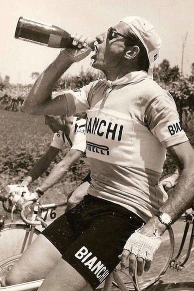
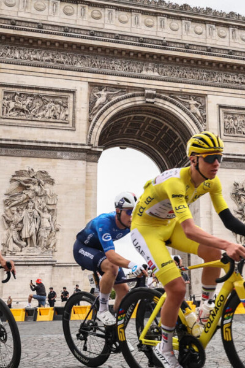
“The greatest climber to ever turn a pedal.”
1998: Won both the Giro d’Italia AND Tour de France in the same year — the last man to do it until Pogačar in 2024.
Alpe d’Huez: 13.8 km at 8% gradient in 37 minutes 35 seconds. Averaging 23 km/h uphill. The record still stands.
“He didn’t ride mountains. He floated up them.”
The bandana. The earring. The attack from kilometres out. Il Pirata.
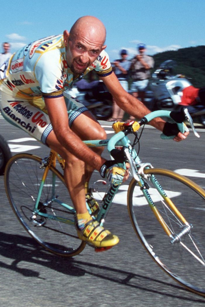
France is synonymous with red — but its whites are equally extraordinary.
Greeks planted the first vines in Marseille, 600 BC. Romans spread them across Gaul. Cistercian monks mapped terroir. The AOC system was born in 1936.
Home to Chardonnay, Sauvignon Blanc, Riesling, Viognier, Marsanne, Savagnin, Vermentino…
“À jamais les premiers.”
26 May 1993, Munich. Basile Boli rises, heads, scores. Olympique de Marseille beat AC Milan 1–0 to become the first — and still only — French club to win the Champions League.
A city that lives and breathes football. The Vélodrome, 67,000 voices, the most passionate fans in France. Marseille doesn’t just support its club — it is its club.
From the Corniche to the Vieux-Port, from bouillabaisse to Boli — everything in Marseille is felt at full volume.
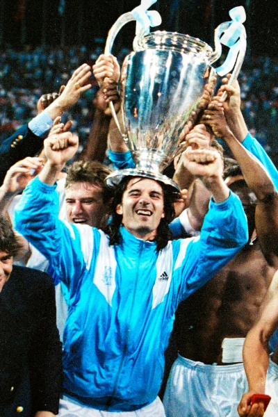
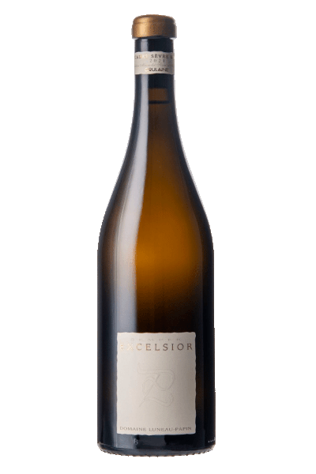
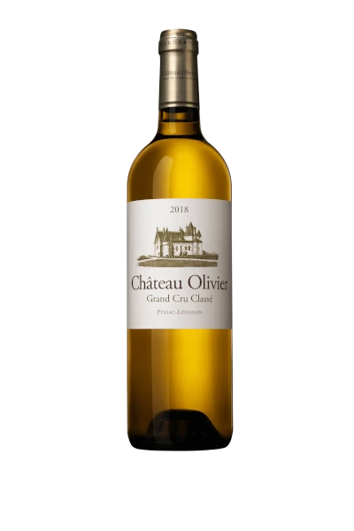
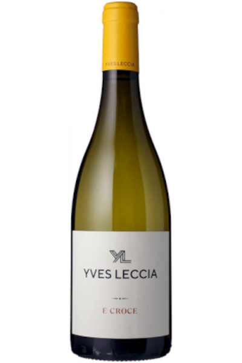
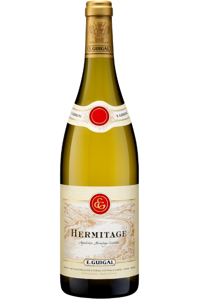
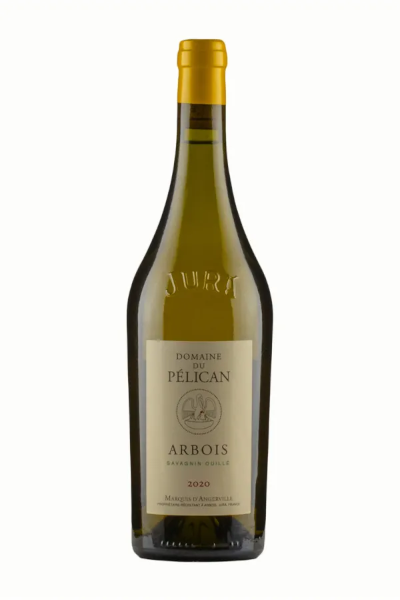
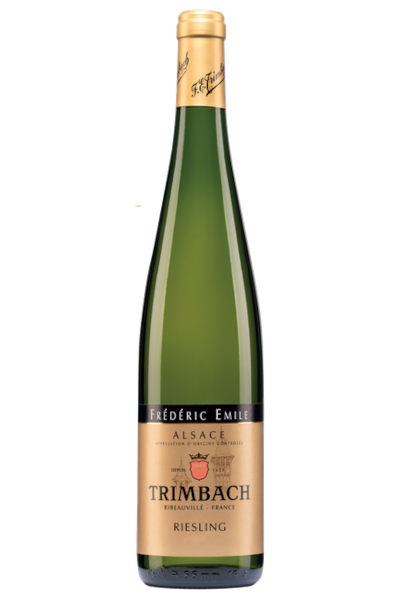
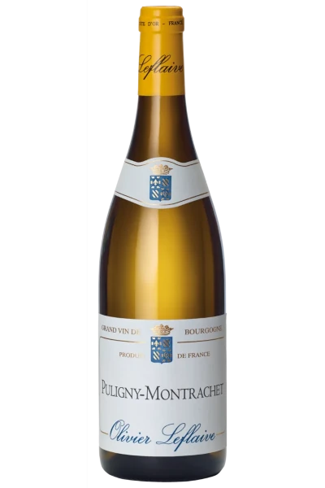
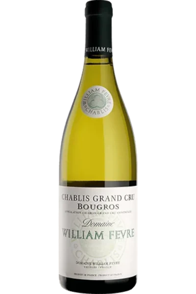
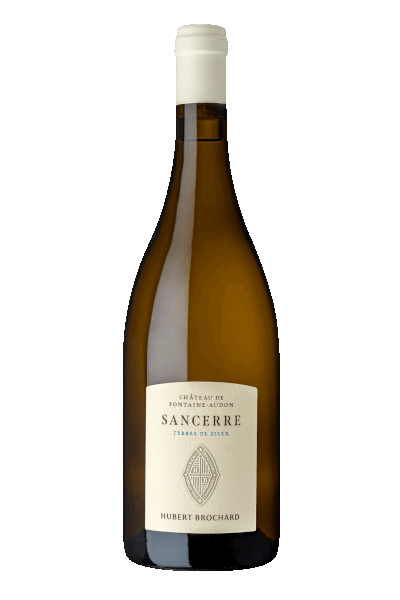
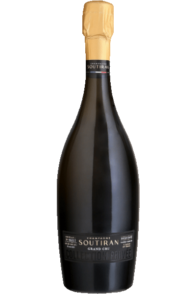
Merci, et santé.